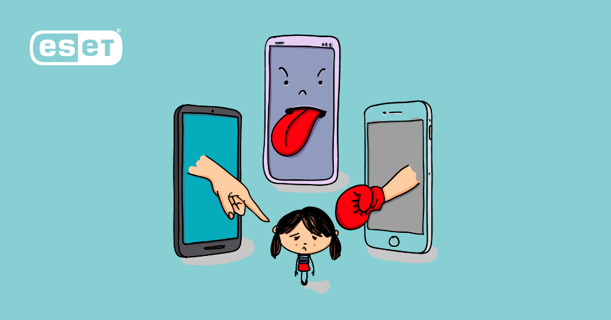
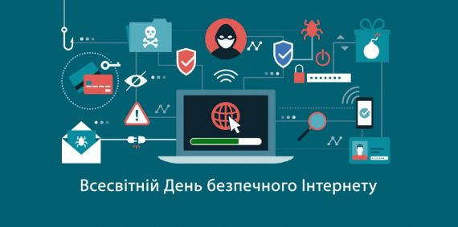

День Безпечного Інтернету
8 лютого 2022 року у світі відзначається День безпечного Інтернету (Safer Internet Day) під гаслом “Разом для найкращого Інтернету”.
День безпечного Інтернету (SID/ДБІ) запровадили мережі Insafe та INHOPE за підтримки Європейської комісії для просування безпечного та позитивного використання цифрових технологій, особливо, дітьми й молоддю. Центр кращого Інтернету представляє Національний комітет Дня безпечного Інтернету в Україні.
-
17
років
-
8
лютого
-
33%
дітей зазнавали кібер булінгу
-
32
вік інтернету
Як захиститися від інтернет-шахраїв:
Суспільство звернуло увагу на цю проблему 17 років тому, коли мережа стала не просто системою комунікації, а й каналом розповсюдження ворожого та шкідливого, а дуже часто жахливого контенту.
-
01Бережіть свої дані
Не надавайте своїх даних. Перевіряйте інформацію.
Цікава інформація -
02Захищайте паролі.
Використовуйте двофакторну автентифікацію (додатковий рівень безпеки). Не розповідайте свій пароль
Цікава інформація -
03Вбережіть себе
Не переходьте за сумнівними посиланнями. Відключіть у мобільного оператора віддалену заміну sim-карти.
Цікава інформація
Кібер булінг
Кібербулінг - це булінг із застосуванням цифрових технологій. Він може відбуватися в соціальних мережах, платформах обміну повідомленнями (месенджерах), ігрових платформах і мобільних телефонах. Це неодноразова поведінка, спрямована на залякування, провокації гніву або приниження тих, проти кого вона спрямована.

COVID19
Під час пандемії COVID19 підлітки стали ще більше часу проводити онлайн і стали ще більш уразливими до негативного впливу кібербулінгу".
Сумна Статистика
Згідно з даними опитування, проведеного ЮНІСЕФ, кожен третій підліток в Україні ставав жертвою онлайн-булінгу, а кожен п'ятий був змушений пропускати через це шкільні заняття.
Цифровий слід
Особистий булінг і кібербулінг часто пов'язані між собою. Але кібербулінг залишає цифровий слід - записи, які можуть бути доказами, які дозволять зупинити травлю.

Безпека
Безпека в Інтернеті: що потрібно знати
Від соціальних мереж – до онлайн-банкінгу: сьогодні Інтернет проник у наше життя і діяльність. Окрім комп’ютерів та ноутбуків, ми підключаємо до Інтернету все – мобільні телефони, планшети, холодильники, телевізори й багато інших портативних пристроїв. Саме тому дуже важливо знати якомога більше про безпеку у Всесвітній мережі.

Оновлення
Оновлення програмного забезпечення
Найкращим захистом від вірусів є не антивірусний захист, своєчасне оновлення програмного забезпечення. Адже його розробники слідкують за можливими загрозами і намагаються захистити свої продукти нововведеннями. Тому, коли ваш пристрій пропонує вам оновлення – не ігноруйте це!
Перевірка сайтів
Перевірка сайтів
Наполегливо рекомендуємо не вводити персональну інформацію (логін, пароль, номер телефону чи платіжної карти) на запити неперевірених сайтів. Такі дані можна надавати лише тим ресурсам, які вже пройшли вашу перевірку, або відомим мережам (наприклад, Google, Facebook, Rozetka, ваші блоги на інформаційних ресурсах тощо).
Цікаво знати